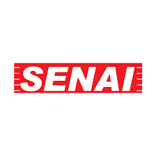
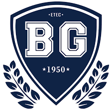

Certificações
-
Ciências da computação
Universidade Internacional UNINTER | Conclusão prevista: Dez/2028
Foco: Analise de Sistemas, Programação Estruturada, POO, Desenvolvimento Web, Sistemas Operacionais.
-

Rede de Computadores - Implantação de Redes Locais
SENAI Osasco | Conclusão: Dez/2025
Foco: Identificar os componentes ativos e passivos utilizados na instalação de redes locais decomputadores, Identificar os tipos de redes de acordo com sua abrangência, topologia e arquitetura, Identificar características dos sistemas operacionais de rede.
-

Técnico em Mecatrônica
Etec Basilides de Godoy | Conclusão: Dez/2024
Foco: Desenho Técnico, Eletrônica, usinagem de peças, montagem de máquina, pneumática, programação de micro-controladores.